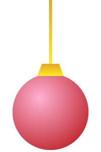

Joulukalenteri

Luova tehtävä
- Suunnittele virtuaalinen joulukalenteri
- Piirrä tai etsi netistä sopiva taustakuva kalenterille
- Piirrä tai etsi sopivia kuvia luukuiksi
- A: Luukuista voi avautua jpg kuva, joka peittää taustan
- B: Luukusta avautuva kuva voi olla png jolloin taustapahvin väri voi olla
- B1 Mikä tahansa väri
- B2 Mikä tahansa kuvio tai pattern
- B3 Läpinäkyvä, jolloin kuva tulee taustakuvan päälle ja
- B31 Liittyy kalenterin maisemaan lisäten siihen elementin
- B32 Peittää osan taustasta ja muuttaa siten skenaariota
Työkaluja
-
Fontit
- Google Fonts Ilmaisia kuvia
- pixabay
- unsplash
- svgsilh - Vektorigrafiikkaa (muokkaa ja väritä Adobe Illustratorissa) CSS Gradientit, heittovarjot ja piparkakkumuotit
- CSS Gradient
- box-shadow-css-generator
- CSS clip-path maker Kuvakkeet
- Heroicons
- Font Awesome v4 icons / cdnjs
HTML
- Tee ja alusta index.html dokumentti boilerplatella
- Tee ja linkitä style.css headiin
- Lisää favicon headiin
- Lataa advent_calendar.js ja linkitä se headiin
- advent_calendar.js
- Lisää bodyyn pääotsikko h1 Joulukalenteri
- Lisää sen jälkeen main-tagi
- Tee main-tagin sisälle tyhjä 5x5 taulukko
- Tee mainin jälkeen, ennen bodyn sulkeutumista script-tagi jonka sisältö on tässä alla
- Muuta scriptin asetuksia:
- isRandom = true (luukkujen järjestys muuttuu joka kerta kun sivu ladataan uudelleen)
- isRandom = false (luukkujen järjestys pysyy samana)
- doors = [1,2,3… (jos luukkujen järjestys pysyy samana, niin käytetään tässä taulukossa määrättyä järjestystä)
- day = null, month = null (käytetään tämänhetkistä päivämäärää)
- day = 25, month = 12 (testaa luukkujen avausta asettamalla päivämäärä)
- imgFileExtension = 'jpg' (vaihda tiedostopääte vastamaan luukkujen kuvatiedostoja: jpg, jpeg, JPG, png, PNG…)
CSS
- importtaa Google Fontsista valitsemasi fontti CSS:n 1. rivillä
-
body
- nollaa marginaalit
- aseta fontti
- aseta bodyn taustaväri tai käytä css gradienttia
- jos et käytä pattern-kuviota, aseta background-repeat: no-repeat;
- skaalaa austa täyttämään bodyn koko background-size: cover;
- aseta body täyttämään pystysuuntainen tila min-height: 100vh;
-
h1
- kasvata pääotsikon kokoa
- käytä Google fonttia
- muuta otsikon väri
-
h1:hover
- otsikkoa klikattaessa JavaScript toteuttaa funktion joka avaa kaikki luukut ennen nykyistä päivää
- funktio toimii vain joulukuussa
- tee kursorista sormi ja aseta tekstin väri
-
table
- keskitä taulukko vaakasuunnassa
- aseta taustakuva (kalenterin kansikuva)
- poista tyhjä tila solujen välistä
- aseta korkeus ja leveys 85vh
-
main
- tee mainista 100% leveä ja korkea
- tee mainista flex elementti
- keskitä flex elementit pysty ja vaakasuunnassa
- lisää alamarginaalia
- lisää 1em padding kaikille puolille
- tee kuvasuhteeseen liittyvä taikatemppu
-
table td
- tee taulukon solusta referenssipiste position: relative;
- määritä tekstin väri
- tee taulukon soluista 20% korkeita ja leveitä (koska 100% / 5 = 20%)
-
.locked
- CSS-luokka locked annetaan automaattisesti JavaScriptissä lukituille luukuille
- tyylittele lukitut luukut haluamasi laisiksi
- aseta pointer-events: none; jolloin luukku ei ole klikattavissa
-
.date_num
- CSS-luokka date_num annetaan automaattisesti JavaScriptissä numeroteksteille
- tyylittele tekstit
- poista marginaali
- tee elementistä 100% leveä
- keskitä teksti
- kasvata fonttia
- aseta heittovarjo
- muuta tekstin väriä
-
lock_icon
- aseta JavaScriptin FontAwsomesta hakema lukkokuvake vasempaan yläkulmaan
- tarkista että FontAwsome on linkitetty headiin html:n puolella
- aseta position: absolute; ja säädä kuvakkeen paikka top / left arvoilla
-
table td:not(.locked):not(.open):hover
- eli siis luukut jotka eivät ole lukossa tai auki mutta hiiri on niiden päällä
- voit vaihtaa hover pseudolla luukun taustaväriä
- kokeile myös läpinäkyvyyttä
- tai käytä backdrop-filter ja lisää kirkkautta tai muu efekti
- animoi siirtymä transition: backdrop-filter 0.2s;
- vaihda myös tekstin väri ja tee hiirestä sormi
-
.open
- JavaScriptin asettama open kuvastaa auki olevaa luukkua
- aseta tausta(pahvin) väri tai taustakuvio tai jätä se läpinäkyväksi
- lisää halutessasi heittovarjo (inset-lisäparametri asettaa varjon sisäreunaan, kuin avattu luukku olisi syvempi)
-
.open img
- säädä avatun luukun kuvan kokoa
- max-width ja max-height esim. 95%
-
.date_num::selection, .date_num::-moz-selection
- aseta tekstivalinnan taustaväriksi läpinäkyvä
- (jos joku sattuu maalaamaan kaikki luukut)
- Tallenna GitHubiin ja tee halutessasi kopio uuteen GitHub pages-repoon ja toivota hyvää joulunodotusta jollekulle…